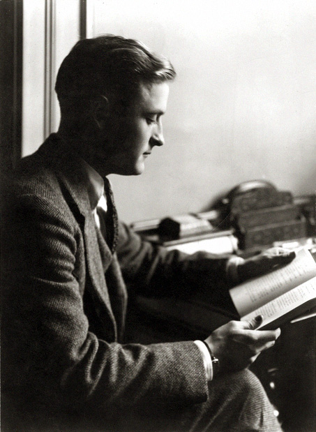
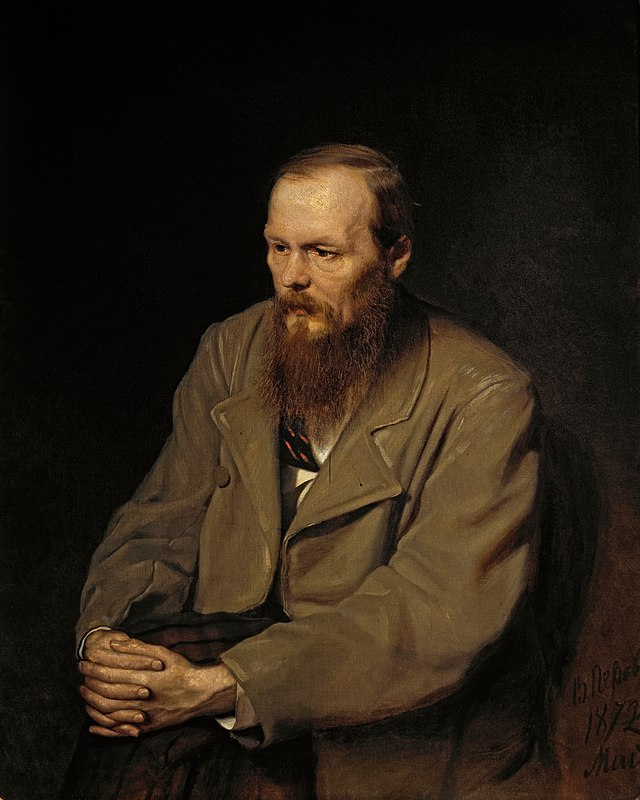
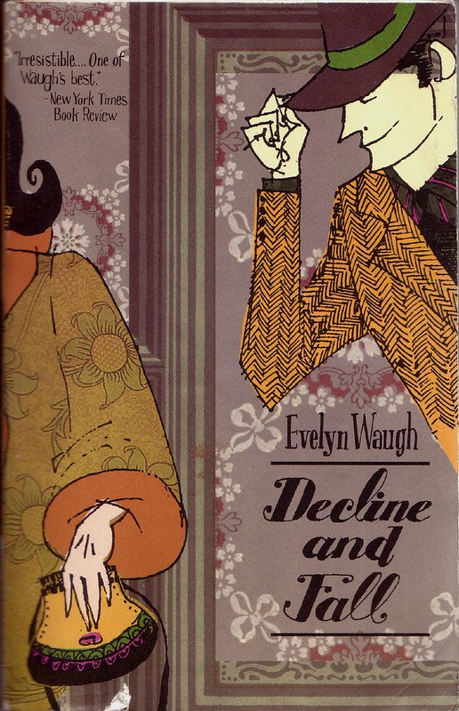

Die Abtei von Northanger
13.03.2020 |
Mein Lieblingsroman von Jane Austen ist
Die Abtei von Northanger.
Die siebzehnjährige Catherine Morland, Tochter eines Pfarrers mit „beträchtlichem Vermögen“, lebt zusammen mit
ihren Eltern und neun Geschwistern in einem kleinen Dorf. Wiederholt erklärt die Autorin, dass sich Catherine aus
verschiedenen eigentlich zwingenden Gründen nicht zur Romanheldin eignet.

Diesseits vom Paradies
12.03.2020 |
Mein Lieblingsroman von F. Scott Fitzgerald ist
Diesseits vom Paradies.
Erstes Buch: Der romantische Egoist — Amory Blaine, ein junger Mann aus dem Mittleren Westen ist davon überzeugt,
dass ihm eine außergewöhnlich glückliche Zukunft bevorstehe. Er stammt aus wohlhabender Familie und kann damit rechnen,
dass er eines Tages über den Reichtum der Blaines verfügen wird.

Der Idiot
11.03.2020 |
Mein Lieblingsroman von Dostoevsky ist
Der Idiot.
Der 26-jährige Fürst Lew Myschkin kehrt nach einem fünfjährigen Aufenthalt in einem Schweizer Sanatorium
an einem Novembermorgen nach Russland zurück, um in Sankt Petersburg nach dem Tod eines Verwandten eine
Erbschaftsangelegenheit zu klären.

Verfall und Untergang
10.03.2020 |
Mein Lieblingsroman von Evelyn Waugh ist
Verfall und Untergang.
Der bescheidene und zurückhaltende Theologie-Student Paul Pennyfeather wird Opfer der Streiche der Studentenvereinigung
Bollinger-Klubs. Weil seine Krawatte große Ähnlichkeiten mit der der Studentenvereinigung hat, wird er gezwungen, ohne
Hosen durch den Hof des fiktiven Oxforder Scone Colleges zu rennen.